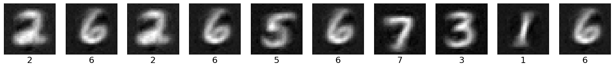

Supervised generative PC¤

This notebook demonstrates how to train a simple feedforward network with predictive coding to generate MNIST digits.
import jpc
import jax
import jax.numpy as jnp
import equinox as eqx
import equinox.nn as nn
import optax
import torch
from torch.utils.data import DataLoader
from torchvision import datasets, transforms
import matplotlib.pyplot as plt
import warnings
warnings.simplefilter('ignore') # ignore warnings
Hyperparameters¤
We define some global parameters, including the network architecture, learning rate, batch size, etc.
SEED = 0
INPUT_DIM = 10
WIDTH = 300
DEPTH = 3
OUTPUT_DIM = 784
ACT_FN = "relu"
LEARNING_RATE = 1e-3
BATCH_SIZE = 64
MAX_T1 = 100
TEST_EVERY = 50
N_TRAIN_ITERS = 200
Dataset¤
Some utils to fetch and plot MNIST.
def get_mnist_loaders(batch_size):
train_data = MNIST(train=True, normalise=True)
test_data = MNIST(train=False, normalise=True)
train_loader = DataLoader(
dataset=train_data,
batch_size=batch_size,
shuffle=True,
drop_last=True
)
test_loader = DataLoader(
dataset=test_data,
batch_size=batch_size,
shuffle=True,
drop_last=True
)
return train_loader, test_loader
class MNIST(datasets.MNIST):
def __init__(self, train, normalise=True, save_dir="data"):
if normalise:
transform = transforms.Compose(
[
transforms.ToTensor(),
transforms.Normalize(
mean=(0.1307), std=(0.3081)
)
]
)
else:
transform = transforms.Compose([transforms.ToTensor()])
super().__init__(save_dir, download=True, train=train, transform=transform)
def __getitem__(self, index):
img, label = super().__getitem__(index)
img = torch.flatten(img)
label = one_hot(label)
return img, label
def one_hot(labels, n_classes=10):
arr = torch.eye(n_classes)
return arr[labels]
def plot_mnist_img_preds(imgs, labels, n_imgs=10):
plt.figure(figsize=(20, 2))
for i in range(n_imgs):
plt.subplot(1, n_imgs, i + 1)
plt.xticks([])
plt.yticks([])
plt.grid(False)
plt.imshow(imgs[i].reshape(28, 28), cmap=plt.cm.binary_r)
plt.xlabel(jnp.argmax(labels, axis=1)[i], fontsize=16)
plt.show()
Network¤
For jpc to work, we need to provide a network with callable layers. This is easy to do with the PyTorch-like nn.Sequential() in equinox. For example, we can define a ReLU MLP with two hidden layers as follows
key = jax.random.PRNGKey(SEED)
key, *subkeys = jax.random.split(key, 4)
network = [
nn.Sequential(
[
nn.Linear(10, 300, key=subkeys[0]),
nn.Lambda(jax.nn.relu)
],
),
nn.Sequential(
[
nn.Linear(300, 300, key=subkeys[1]),
nn.Lambda(jax.nn.relu)
],
),
nn.Linear(300, 784, key=subkeys[2]),
]
You can also use jpc.make_mlp() to define a multi-layer perceptron (MLP) or fully connected network.
network = jpc.make_mlp(
key,
input_dim=INPUT_DIM,
width=WIDTH,
depth=DEPTH,
output_dim=OUTPUT_DIM,
act_fn=ACT_FN,
use_bias=True
)
print(network)
[Sequential(
layers=(
Lambda(fn=Identity()),
Linear(
weight=f32[300,10],
bias=f32[300],
in_features=10,
out_features=300,
use_bias=True
)
)
), Sequential(
layers=(
Lambda(fn=<PjitFunction of <function relu at 0x117801bd0>>),
Linear(
weight=f32[300,300],
bias=f32[300],
in_features=300,
out_features=300,
use_bias=True
)
)
), Sequential(
layers=(
Lambda(fn=<PjitFunction of <function relu at 0x117801bd0>>),
Linear(
weight=f32[784,300],
bias=f32[784],
in_features=300,
out_features=784,
use_bias=True
)
)
)]
Train and test¤
A PC network can be updated in a single line of code with jpc.make_pc_step(). Similarly, we can use jpc.test_generative_pc() to compute the network accuracy. Note that these functions are already "jitted" for optimised performance. Below we simply wrap each of these functions in training and test loops, respectively.
Note that to train in an unsupervised way, you would simply need to remove the input from jpc.make_pc_step() and the evaluate() script. See this example notebook.
def evaluate(key, layer_sizes, batch_size, network, test_loader, max_t1):
test_acc = 0
for _, (img_batch, label_batch) in enumerate(test_loader):
img_batch, label_batch = img_batch.numpy(), label_batch.numpy()
acc, img_preds = jpc.test_generative_pc(
model=network,
input=label_batch,
output=img_batch,
key=key,
layer_sizes=layer_sizes,
batch_size=batch_size,
max_t1=max_t1
)
test_acc += acc
avg_test_acc = test_acc / len(test_loader)
return avg_test_acc, label_batch, img_preds
def train(
key,
input_dim,
width,
depth,
output_dim,
batch_size,
network,
lr,
max_t1,
test_every,
n_train_iters
):
layer_sizes = [input_dim] + [width]*(depth-1) + [output_dim]
optim = optax.adam(lr)
opt_state = optim.init(
(eqx.filter(network, eqx.is_array), None)
)
train_loader, test_loader = get_mnist_loaders(batch_size)
for iter, (img_batch, label_batch) in enumerate(train_loader):
img_batch, label_batch = img_batch.numpy(), label_batch.numpy()
result = jpc.make_pc_step(
model=network,
optim=optim,
opt_state=opt_state,
input=label_batch,
output=img_batch,
max_t1=max_t1
)
network, opt_state = result["model"], result["opt_state"]
train_loss = result["loss"]
if ((iter+1) % test_every) == 0:
avg_test_acc, test_label_batch, img_preds = evaluate(
key,
layer_sizes,
batch_size,
network,
test_loader,
max_t1=max_t1
)
print(
f"Train iter {iter+1}, train loss={train_loss:4f}, "
f"avg test accuracy={avg_test_acc:4f}"
)
if (iter+1) >= n_train_iters:
break
plot_mnist_img_preds(img_preds, test_label_batch)
return network
Run¤
network = train(
key=key,
input_dim=INPUT_DIM,
width=WIDTH,
depth=DEPTH,
output_dim=OUTPUT_DIM,
batch_size=BATCH_SIZE,
network=network,
lr=LEARNING_RATE,
max_t1=MAX_T1,
test_every=TEST_EVERY,
n_train_iters=N_TRAIN_ITERS
)
Train iter 50, train loss=0.312354, avg test accuracy=79.717545
Train iter 100, train loss=0.275381, avg test accuracy=83.794067
Train iter 150, train loss=0.293271, avg test accuracy=84.755608
Train iter 200, train loss=0.297628, avg test accuracy=84.785660
